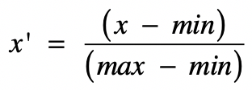

- 01 二进制：不了解计算机的源头，你学什么编程.md.html
- 02 余数：原来取余操作本身就是个哈希函数.md.html
- 03 迭代法：不用编程语言的自带函数，你会如何计算平方根？.md.html
- 04 数学归纳法：如何用数学归纳提升代码的运行效率？.md.html
- 05 递归（上）：泛化数学归纳，如何将复杂问题简单化？.md.html
- 06 递归（下）：分而治之，从归并排序到MapReduce.md.html
- 07 排列：如何让计算机学会“田忌赛马”？.md.html
- 08 组合：如何让计算机安排世界杯的赛程？.md.html
- 09 动态规划（上）：如何实现基于编辑距离的查询推荐？.md.html
- 10 动态规划（下）：如何求得状态转移方程并进行编程实现？.md.html
- 11 树的深度优先搜索（上）：如何才能高效率地查字典？.md.html
- 12 树的深度优先搜索（下）：如何才能高效率地查字典？.md.html
- 13 树的广度优先搜索（上）：人际关系的六度理论是真的吗？.md.html
- 14 树的广度优先搜索（下）：为什么双向广度优先搜索的效率更高？.md.html
- 15 从树到图：如何让计算机学会看地图？.md.html
- 16 时间和空间复杂度（上）：优化性能是否只是“纸上谈兵”？.md.html
- 17 时间和空间复杂度（下）：如何使用六个法则进行复杂度分析？.md.html
- 18 总结课：数据结构、编程语句和基础算法体现了哪些数学思想？.md.html
- 19 概率和统计：编程为什么需要概率和统计？.md.html
- 20 概率基础（上）：一篇文章帮你理解随机变量、概率分布和期望值.md.html
- 21 概率基础（下）：联合概率、条件概率和贝叶斯法则，这些概率公式究竟能做什么？.md.html
- 22 朴素贝叶斯：如何让计算机学会自动分类？.md.html
- 23 文本分类：如何区分特定类型的新闻？.md.html
- 24 语言模型：如何使用链式法则和马尔科夫假设简化概率模型？.md.html
- 25 马尔科夫模型：从PageRank到语音识别，背后是什么模型在支撑？.md.html
- 26 信息熵：如何通过几个问题，测出你对应的武侠人物？.md.html
- 27 决策树：信息增益、增益比率和基尼指数的运用.md.html
- 28 熵、信息增益和卡方：如何寻找关键特征？.md.html
- 29 归一化和标准化：各种特征如何综合才是最合理的？.md.html
- 30 统计意义（上）：如何通过显著性检验，判断你的A_B测试结果是不是巧合？.md.html
- 31 统计意义（下）：如何通过显著性检验，判断你的A_B测试结果是不是巧合？.md.html
- 32 概率统计篇答疑和总结：为什么会有欠拟合和过拟合？.md.html
- 33 线性代数：线性代数到底都讲了些什么？.md.html
- 34 向量空间模型：如何让计算机理解现实事物之间的关系？.md.html
- 35 文本检索：如何让计算机处理自然语言？.md.html
- 36 文本聚类：如何过滤冗余的新闻？.md.html
- 37 矩阵（上）：如何使用矩阵操作进行PageRank计算？.md.html
- 38 矩阵（下）：如何使用矩阵操作进行协同过滤推荐？.md.html
- 39 线性回归（上）：如何使用高斯消元求解线性方程组？.md.html
- 40 线性回归（中）：如何使用最小二乘法进行直线拟合？.md.html
- 41 线性回归（下）：如何使用最小二乘法进行效果验证？.md.html
- 42 PCA主成分分析（上）：如何利用协方差矩阵来降维？.md.html
- 43 PCA主成分分析（下）：为什么要计算协方差矩阵的特征值和特征向量？.md.html
- 44 奇异值分解：如何挖掘潜在的语义关系？.md.html
- 45 线性代数篇答疑和总结：矩阵乘法的几何意义是什么？.md.html
- 46 缓存系统：如何通过哈希表和队列实现高效访问？.md.html
- 47 搜索引擎（上）：如何通过倒排索引和向量空间模型，打造一个简单的搜索引擎？.md.html
- 48 搜索引擎（下）：如何通过查询的分类，让电商平台的搜索结果更相关？.md.html
- 49 推荐系统（上）：如何实现基于相似度的协同过滤？.md.html
- 50 推荐系统（下）：如何通过SVD分析用户和物品的矩阵？.md.html
- 51 综合应用篇答疑和总结：如何进行个性化用户画像的设计？.md.html
- 导读：程序员应该怎么学数学？.md.html
- 开篇词 作为程序员，为什么你应该学好数学？.md.html
- 数学专栏课外加餐（一） 我们为什么需要反码和补码？.md.html
- 数学专栏课外加餐（三）：程序员需要读哪些数学书？.md.html
- 数学专栏课外加餐（二） 位操作的三个应用实例.md.html
- 结束语 从数学到编程，本身就是一个很长的链条.md.html
- 捐赠
29 归一化和标准化：各种特征如何综合才是最合理的？
你好，我是黄申，今天我来说说特征值的变换。
上一节我讲了如何在众多的特征中，选取更有价值的特征，以提升模型的效率。特征选择是特征工程中的重要步骤，但不是全部。今天，我来说说特征工程中的另一块内容，数值变换。也就是说，我们可以使用统计中的数据分布，对连续型的数值特征进行转换，让多个特征的结合更有效。具体怎么理解呢？我下面就来详细讲一讲。
为什么需要特征变换？
我们在很多机器学习算法中都会使用特征变换。我使用其中一种算法线性回归作为例子，来解释为什么要进行数值型特征的变换。
我们之前介绍的监督式学习会根据某个样本的一系列特征，最后判定它应该属于哪个分类，并给出一个离散的分类标签。除此之外，还有一类监督式学习算法，会根据一系列的特征输入，给出连续的预测值。
举个例子，房地产市场可以根据销售的历史数据，预估待售楼盘在未来的销售情况。如果只是预估卖得“好”还是“不好”，那么这个粒度明显就太粗了。如果我们能做到预估这些房屋的售价，那么这个事情就变得有价值了。想要达成这个预测目的的过程，就需要最基本的因变量连续回归分析。
因变量连续回归的训练和预测，和分类的相应流程大体类似，不过具体采用的技术有一些不同。它采用的是研究一个或多个随机变量\(y\_{1}\)，\(y\_{2}\)，…，\(y\_{i}\)与另一些变量\(x\_{1}\)，\(x\_{2}\)，…，\(x\_{k}\)之间关系的统计方法，又称多重回归分析。
我们将\(y\_{1}\)，\(y\_{2}\)，…，\(y\_{i}\)称为因变量，\(x\_{1}\)，\(x\_{2}\)，…，\(x\_{k}\)称为自变量。通常情况下，因变量的值可以分解为两部分，一部分是受自变量影响的，即表示为自变量相关的函数，其中函数形式已知，可能是线性也可能是非线性函数，但包含一些未知参数；另一部分是由于其他未被考虑的因素和随机性的影响，即随机误差。
如果因变量和自变量为线性关系时，就称为线性回归模型；如果因变量和自变量为非线性关系，则称为非线性回归分析模型。今天我们要说的是回归中常用的多元线性回归，它的基本形式是：
其中，\(x\_{1}\)，\(x\_{2}\)，…，\(x\_{n}\)是自变量，\(y\)是因变量，\(ε\)是随机误差，通常假定随机误差的均值为0。而w0是截距，\(w\_{1}\)，\(w\_{2}\)，…，\(w\_{n}\)是每个自变量的系数，表示每个自变量对最终结果的影响是正面还是负面，以及影响的程度。如果某个系数大于0，表示对应的自变量对结果是正面影响，这个自变量越大，结果就越大。否则就是负面影响，这个自变量越大，结果就越小。而系数的绝对值表示了影响程度的大小，如果绝对值趋于0，表示基本没有影响。
线性回归也是统计概率中常用的算法。不过它的实现通常会涉及很多线性代数的知识，所以下一个模块的时候，我会再详细介绍这个算法。这一节，你只需要知道线性回归所要达到的目标，以及怎么使用它就可以了。
线性回归和其他算法相比，有很强的可解释性。我们可以通过回归后为每个自变量确定的系数，来判断哪些自变量对最终的因变量影响更大。可是，在正式开始线性回归分析之前，还有一个问题，那就是不同字段的数据没有可比性。
比如，房屋的面积和建造的年份，它们分别代表了不同的含义，也有不一样的取值范围。在线性回归中，如果直接将没有可比性的数字型特征线性加和，那么模型最终的解释肯定会受影响。
这里我用Boston Housing数据集对房价数据进行回归分析，这个数据来自70年代美国波士顿周边地区的房价，是用于机器学习的经典数据集，你可以在Kaggle的网站（https://www.kaggle.com/c/boston-housing#description）下载到它。这个数据一共有14个特征或者说自变量，而有1个目标值或者说因变量。
这里，我只使用其中的train.csv。使用一小段Python代码，我们就能很快的得到一个线性回归的结果。
import pandas as pd
from sklearn.linear_model import LinearRegression
df = pd.read_csv("/Users/shenhuang/Data/boston-housing/train.csv") #读取Boston Housing中的train.csv
df_features = df.drop(['medv'], axis=1) #Dataframe中除了最后一列，其余列都是特征，或者说自变量
df_targets = df['medv'] #Dataframe最后一列是目标变量，或者说因变量
regression = LinearRegression().fit(df_features, df_targets) #使用特征和目标数据，拟合线性回归模型
print(regression.score(df_features, df_targets)) #拟合程度的好坏
print(regression.coef_) #各个特征所对应的系
使用上述代码之前，请确保你已经按照了Python中的sklearn和pandas包。运行这段代码，你可以得到如下的结果：
0.735578647853312
[-4.54789253e-03 -5.17062363e-02 4.93344687e-02 5.34084254e-02
3.78011391e+00 -1.54106687e+01 3.87910457e+00 -9.51042267e-03
-1.60411361e+00 3.61780090e-01 -1.14966409e-02 -8.48538613e-01
1.18853164e-02 -6.01842329e-01]
因为不是所有的数据都是可以使用线性回归模型来表示，所以我们需要使用regression.score函数，来看拟合的程度。如果完美拟合，这个函数就会输出1；如果拟合效果很差，这个函数的输出可能就是一个负数。
这里regression.score函数的输出大约为0.74，接近于1.0。它表示这个数据集使用线性模型拟合的效果还是不错的。如果你还是不理解，不用担心，具体的我们会在线性代数部分详细解答。这里你可以简单的理解为，0.74仅仅表示我们可以使用线性回归来解决Boston Housing这个问题。
这里，你更需要关注的是每个特征所对应的权重，因为它们可以帮助我们解释哪个特征对最终房价的中位值有更大的影响。参看train.csv中的数据，你会发现最主要的两个正相关特征是nox（系数为3.78011391e+00）和age（系数为3.87910457e+00）。其中nox表示空气污染浓度，age表示老房子占比，也就是说空气污染越多、房龄越高，房价中位数越高，这好像不太合乎常理。我们再来看看最主要的负相关特征rm（系数为-1.54106687e+01），也就是房间数量。房间数量越多，房价中位数越低，越不合理。
造成这些现象最重要的原因是，不同类型的特征值没有转换到同一个可比较的范围内，所以线性回归后所得到的系数不具有可比性，因此我们无法直接对这些权重加以解释。
两种常见的特征变换方法
该怎么解决这个问题呢？我们就需要对特征值进行转换。今天我介绍两种最常见的变换方法：归一化和标准化。
归一化
我们先来看最常用的方法，归一化（Normalization）。它其实就是获取原始数据的最大值和最小值，然后把原始值线性变换到[0,1]之间，具体的变换函数为：

其中\(x\)是原始值，\(max\)为样本数据的最大值，\(min\)为样本数据的最小值，\(x’\)是变换后的值。这种方法有个不足最大值与最小值非常容易受噪音数据的影响。
这里面需要注意的是，“归一化”这个词在不同的领域的含义可能不同。这里我们特指基于最大和最小值的变换。
接下来，我们来看看在Python中如何实现归一化，以及归一化对回归后系数的影响。
from sklearn.preprocessing import StandardScaler
from sklearn.preprocessing import MinMaxScaler
minMaxScaler = MinMaxScaler() #基于min和max值的归一化
df_normalized = minMaxScaler.fit_transform(df) #对原始数据进行归一化，包括特征值和目标变量
df_features_normalized = df_normalized[:, 0:-1] #获取归一化之后的特征值
df_targets_normalized = df_normalized[:, -1] #获取归一化之后的目标值
#再次进行线性回归
regression_normalized = LinearRegression().fit(df_features_normalized, df_targets_normalized)
print(regression_normalized.score(df_features_normalized, df_targets_normalized))
print(regression_normalized.coef
其中，df还是之前加载的dataframe。运行这段代码，你可以得到如下结果：
0.7355786478533118
[-0.05103746 -0.08448544 0.10963215 0.03204506 0.08400253 -0.16643522
0.4451488 -0.01986622 -0.34152292 0.18490982 -0.13361651 -0.16216516
0.10390408 -0.48468369]
你可以看到，表示拟合程度的分数没有变，但是每个特征对应的系数或者说权重，发生了比较大的变化。仔细观察一下，你会发现，这次最主要的正相关特征是age（0.4451488）和tax（0.18490982），也就是老房子占比和房产税的税率，其中至少房产税的税率是比较合理的，因为高房价的地区普遍税率也比较高。而最主要的负相关特征是rad（-0.34152292）和lstat（-0.48468369），rad表示高速交通的便利程度，它的值越大表示离高速越远，房价中位数越低。而lstat表示低收入人群的占比，这个值越大房价中位数越低，这两点都是合理的。
标准化
另一种常见的方法是基于正态分布的z分数（z-score）标准化（Standardization）。该方法假设数据呈现标准正态分布。
什么是标准正态分布呢？我们之前介绍过，正态分布是连续随机变量概率分布的一种。在现实生活中，大量随机现象的数据分布都近似于正态分布。
我这里再快速回顾一下这种分布的特点。
它以经过平均数的垂线为轴，左右对称展开，中间点最高，然后逐渐向两侧下降，分布曲线和x轴组成的面积为1，表示不同事件出现的概率和为1。平均数和标准差是正态分布的关键参数，它们会决定分布的具体形态。而标准正态分布是正态分布的一种，平均数为0，标准差为1。
理解了什么是标准正态分布，我们来看看z分数这个方法是如何运作的。实际上，z分数标准化是利用标准正态分布的特点，计算一个给定分数距离平均数有多少个标准差。它的具体转换公式如下：
其中\(x\)为原始值，\(u\)为均值，\(σ\)为标准差，\(x’\)是变换后的值。
经过z分数的转换，高于平均数的分数会得到一个正的标准分，而低于平均数的分数会得到一个负的标准分数。更重要的是，转换后的数据是符合标准正态分布的。你通过理论或者具体的数值来推导一下，就会发现转换后的数据均值为0，标准差为1。
和归一化相比，z分数这样的标准化不容易受到噪音数据的影响，并且保留了各维特征对目标函数的影响权重。
下面我们来看看，在Python中如何实现标准化，以及标准化对回归后系数的影响。
standardScaler = StandardScaler() #基于Z分数的标准化
standardScaler.fit(df)
df_standardized = standardScaler.transform(df) #对原始数据进行标准化，包括特征值和目标变量
df_features_standardized = df_standardized[:, 0:-1] #获取标准化之后的特征值
df_targets_standardized = df_standardized[:, -1] #获取标准化之后的特征值
#再次进行线性回归
regression_standardized = LinearRegression().fit(df_features_standardized, df_targets_standardized)
print(regression_standardized.score(df_features_standardized, df_targets_standardized))
print(regression_standardized.coef
其中，df还是之前加载的dataframe。运行这段代码，这次你得到的结果如下：
0.7355786478533118
[-0.07330367 -0.04144107 0.12194378 0.04074345 0.09805446 -0.19311408
0.29767387 -0.02916672 -0.34642803 0.34477088 -0.21410757 -0.19904179
0.11218058 -0.46369483]
表示拟合程度的分数仍然没有变。再次对比不同特征所对应的系数，你会发现这次最主要的正相关特征还是age（0.29767387）和tax（0.34477088），但是相比之前，明显房产税的税率占了更高的权重，更加合理。而最主要的负相关特征还是rad（-0.34152292）和lstat（-0.48468369），这两点都是合理的。
总结
今天我介绍了在机器学习领域里，如何使用统计里的数据分布来进行特征值的转换。这里，我帮你梳理了几个要点，便于你的记忆。
第一点，为什么有时候需要转换特征值？因为不同类型的特征取值范围不同，分布也不同，相互之间没有可比性。因此在线性回归中，通过这些原始值分析得到的权重，并不能代表每个特征实际的重要性。
第二点，如何使用归一化进行特征值转换？这里的归一化是指使用特征取值范围中的最大值和最小值，把原始值转换为0到1之间的值。这样处理的好处在于简单易行，便于理解。不过，它的缺点也很明显，由于只考虑了最大最小值，因此很容易受到异常数据点的干扰。
第三点，如何使用标准化进行转换？经过标准化处理之后，每种特征的取值都会变成一个标准正态分布，以0为均值，1为标准差。和归一化相比，标准化使用了数据是正态分布的假设，不容易受到过大或过小值的干扰。
掌握了上面几个点，你就能很好的理解这一节的内容了。在实际的数据分析或者是统计建模的项目中，对于数值型的特征要保持敏感，看到它们的时候都要考虑一下，是不是需要进行特征值的转换？这样就能避免由于多种特征的不同分布而产生的误导性结论。
思考题
今天我们使用了三种方式处理Boston Housing的数据，并训练出三种线性回归的模型。请尝试使用这些模型的predict方法，对test.csv数据进行预测，看看每种模型的预测效果。（提示：如果你在train.csv上使用了某种特征值的转换，那么相应的test.csv数据也需要经过同样的处理。）
欢迎留言和我分享，也欢迎你在留言区写下今天的学习笔记。你也可以把今天的内容分享给你的好友，和他一起在实战中重新理解数学。
© 2019 - 2023 Liangliang Lee. Powered by gin and hexo-theme-book.